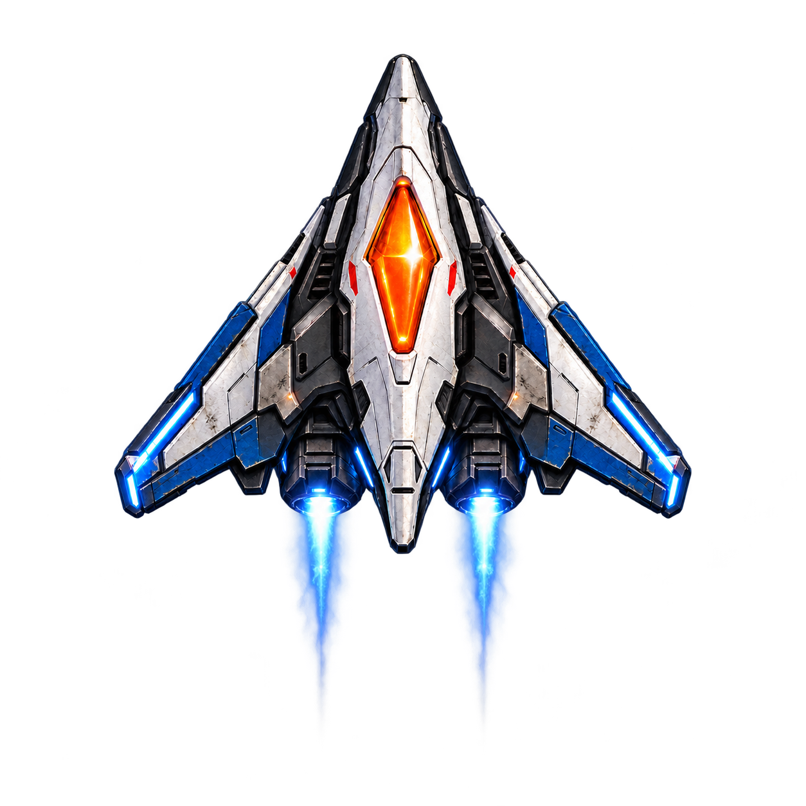
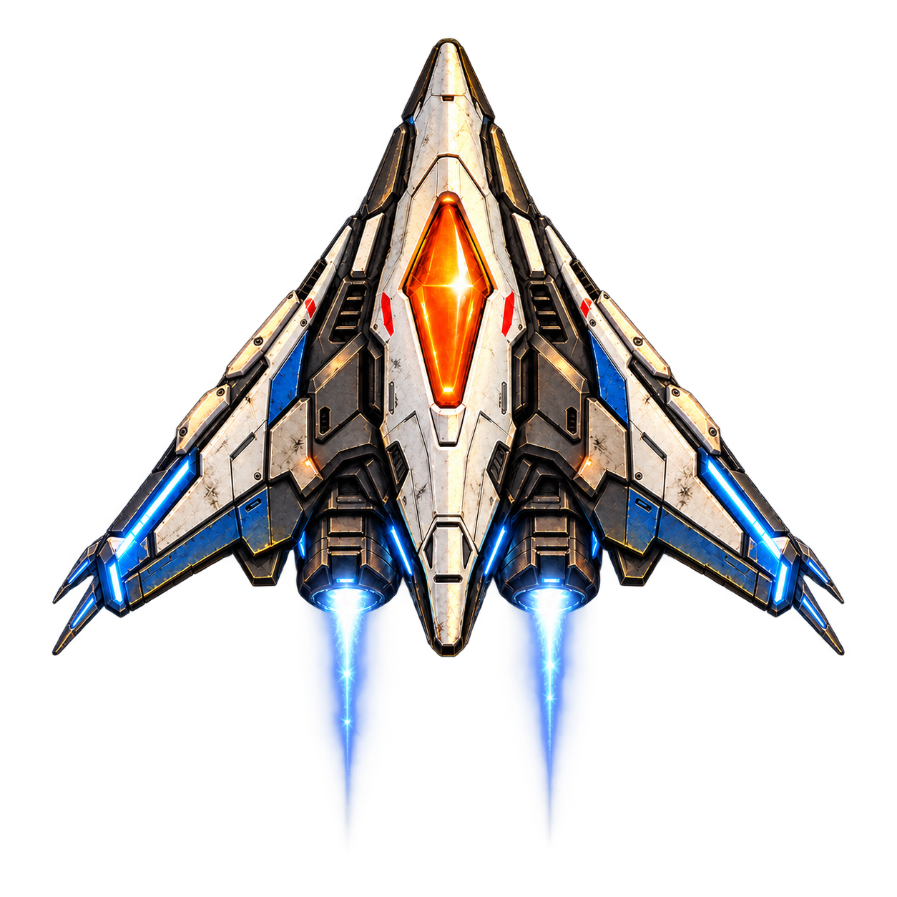
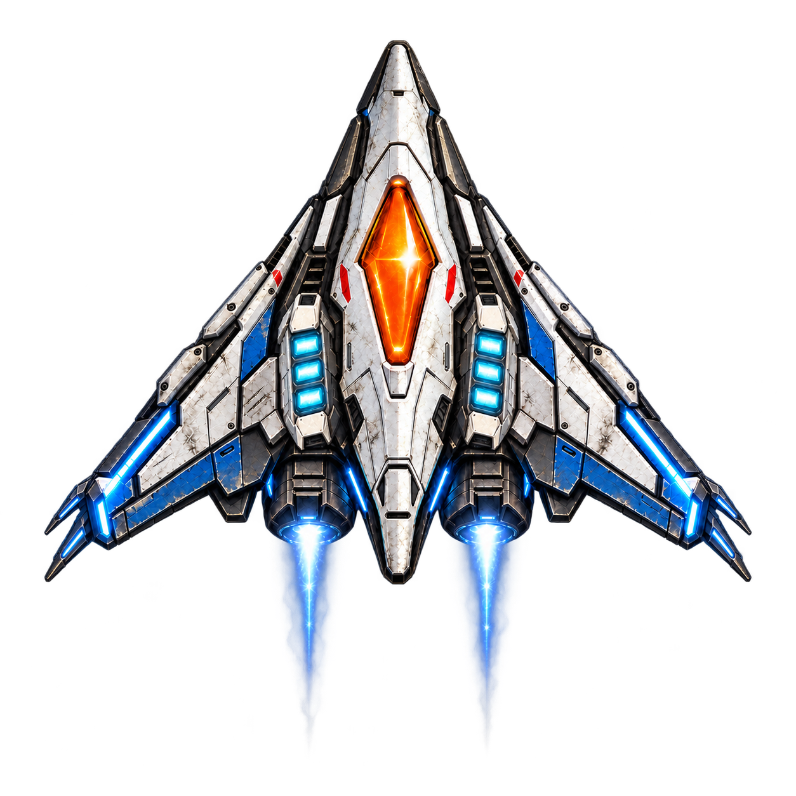
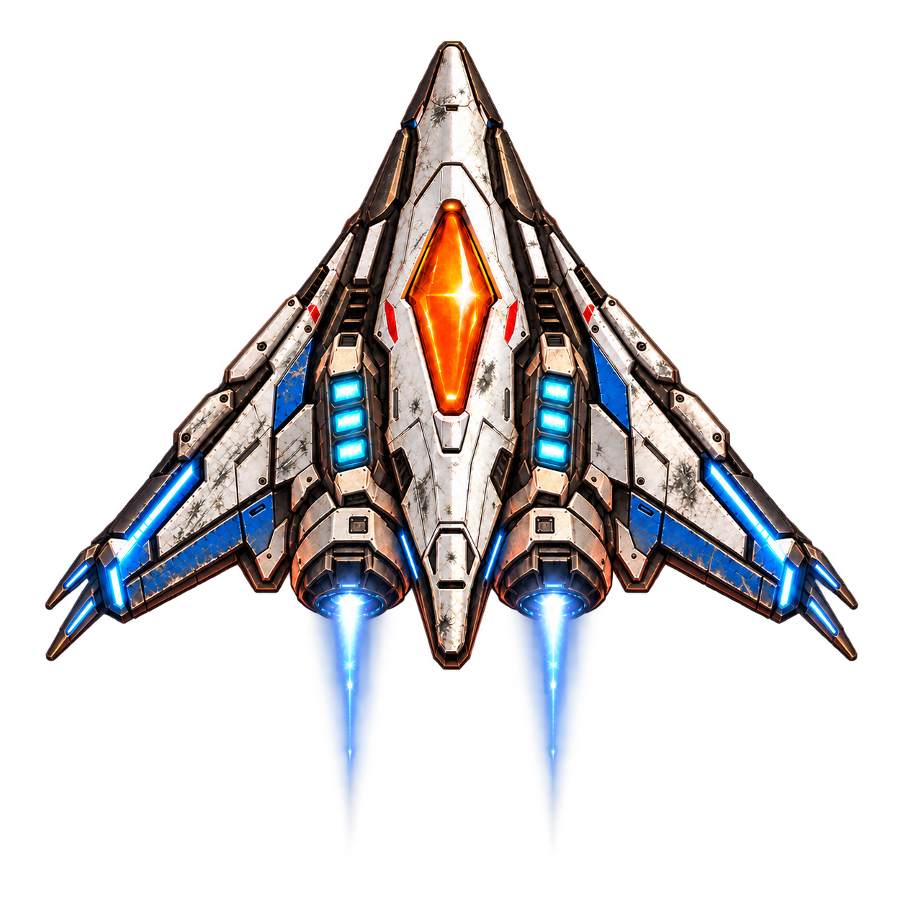
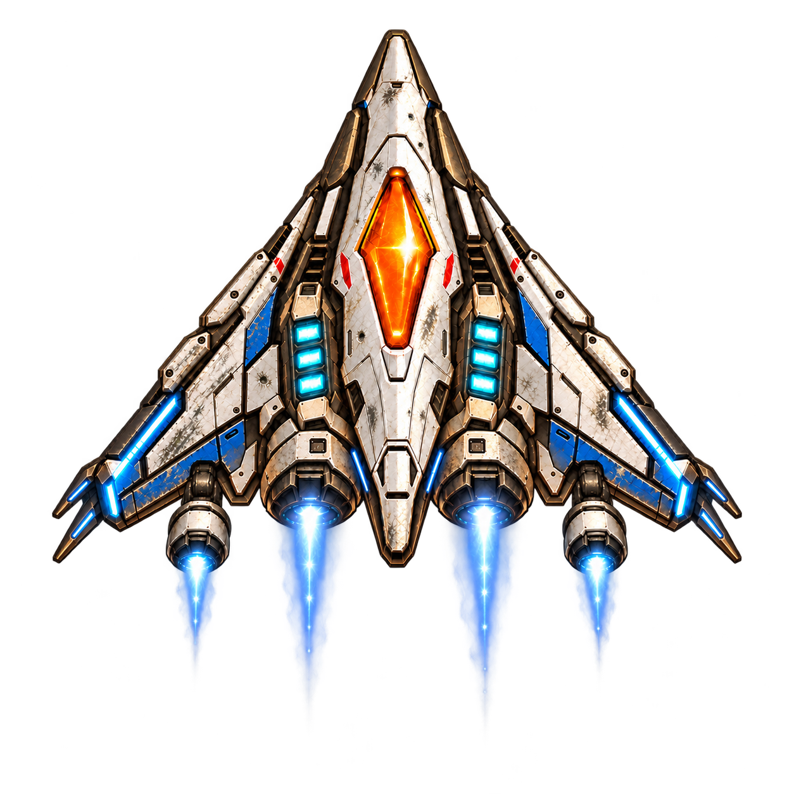
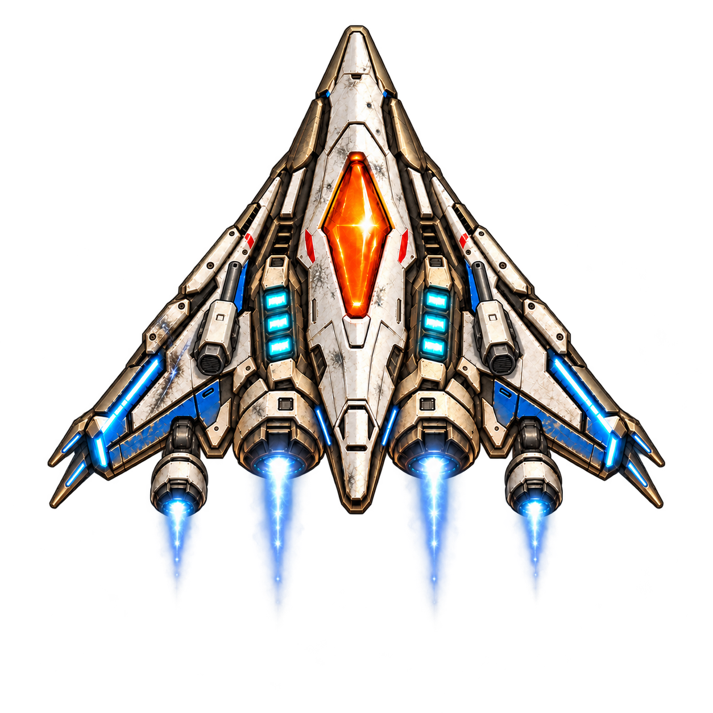
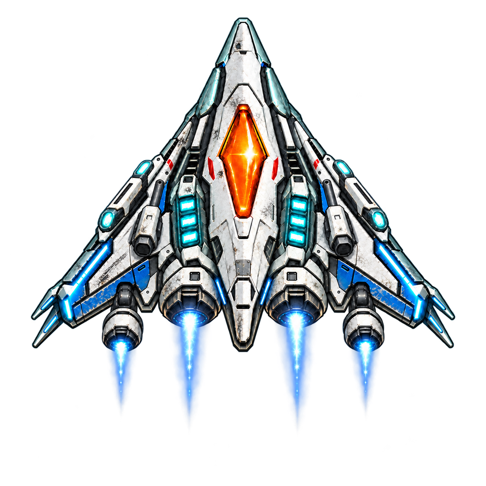
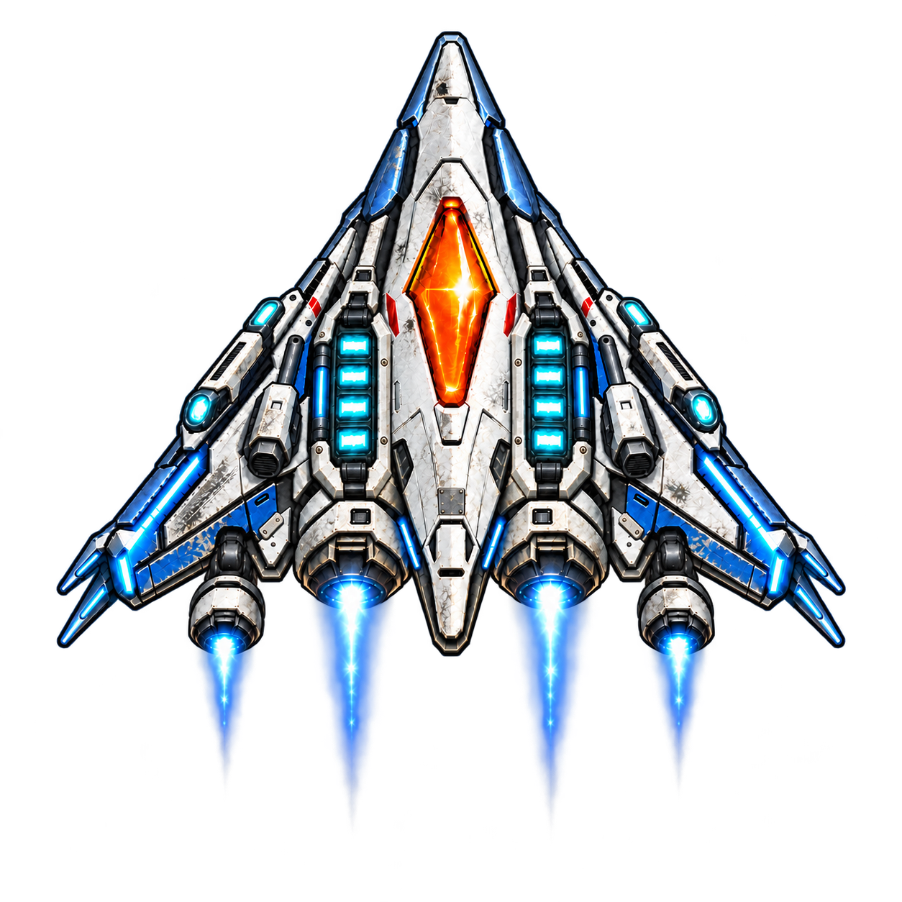
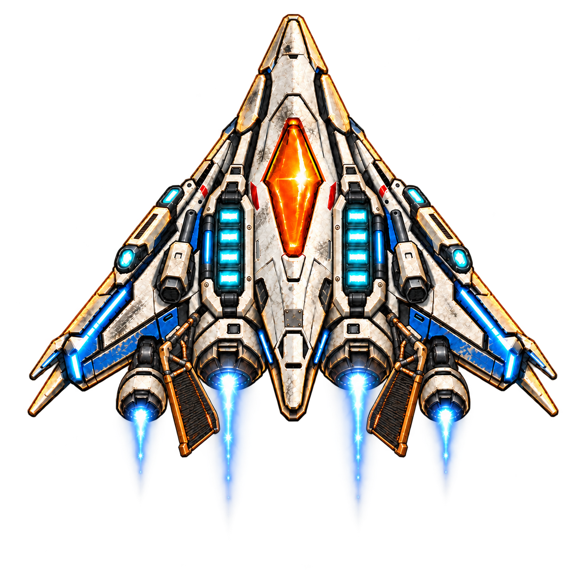

Исходный корабль с сайта
Предлагаемая польза: Базовое управление и вооружение
Освещение: Тёплый медный и янтарный по светлым граням
Девять последовательных концептов: новые модули, ремонт и накопленный износ от Mercury до Solar Crown.
Механики, численные бонусы и новые реплики ниже — проект. Изображения не означают, что эти возможности уже работают в игре. Текущая карточка Player Interceptor сохранена отдельно.
Корабль в действующем каталоге ↗ · Скачать исходный план v9 ↓
Старт

Предлагаемая польза: Базовое управление и вооружение
Освещение: Тёплый медный и янтарный по светлым граням
После Mercury / 1-5

Предлагаемая польза: Немного медленнее накапливается воздействие кислотной среды; короткие помехи быстрее проходят
Освещение: Шампанское, мягкое золото, едва заметный оливковый рефлекс
После Venus / 2-5

Предлагаемая польза: Щит немного быстрее восстанавливается после достаточно долгого перерыва в попаданиях
Освещение: Холодный голубой, белый, слабый сине-зелёный снизу
После Earth / 3-5

Предлагаемая польза: Небольшое повышение прочности; без пассивной регенерации и неуязвимости к оборудованию фабрики
Освещение: Терракотовый и красно-медный на обращённых к планете гранях
После Mars / 4-5

Предлагаемая польза: Чуть эффективнее коррекция курса при смене ветра; шторм и гравитация продолжают воздействовать
Освещение: Кремовый, охристый и медный; бело-синие вспышки от молний
После Jupiter / 5-5

Предлагаемая польза: Парный курсовой огонь; не уничтожает любой лёд и не отменяет уклонение
Освещение: Жемчужно-бежевый, бледное золото и холодные блики льда
После Saturn / 6-5

Предлагаемая польза: Короткий лазерный импульс с перезарядкой; не заменяет сканирование ROOK и не устраняет обмерзание
Освещение: Очень бледный бирюзовый и ледяной голубой; небольшая общая яркость
После Uranus / 7-5

Предлагаемая польза: Немного больше резерв щита; не возвращает анализ и подсказки ROOK
Освещение: Глубокий синий с умеренным индиго; светлые грани сохраняют читаемость
После Neptune / 8-5, при открытии эпилога

Предлагаемая польза: Расширение теплового запаса для эпилога; солнечная корона остаётся смертельно опасной
Освещение: Бело-золотой свет и горячий оранжевый по краям
Один и тот же корабль проходит всю кампанию. Сохраняются длинный нос, треугольный силуэт, оранжевая ромбовидная кабина, синие панели и два cyan-двигателя. После каждой завершённой планеты Max устанавливает один пакет доработок для следующей главы. Пакет даётся за прохождение, без повторной покупки. Новые элементы накапливаются, но поздние детали заменяют старые узлы там, где иначе возникло бы нагромождение.
Отделить постоянное развитие конструкции от освещения текущей локации. При повторном прохождении Mercury корабль сохраняет приобретённые модули, а отражения соответствуют Mercury. Цвет не должен означать потерю старых улучшений.
Предлагаемые сцены и VO-черновик. В основной сценарий не включены.
После итогового экрана главы — короткая сцена в ангаре примерно 12–18 секунд: корабль, Max, подсветка новой детали, 2–3 реплики, одна строка пользы и кнопка «Продолжить». Предусмотреть пропуск. Получение награды не зависит от досмотра; повторный запуск сцены не выдаёт её снова. Первый кадр — прежний корпус, затем монтаж/краткий переход к новому. В следующих визитах в ангар остаётся актуальная модель.
Реплики ниже — русский смысл и английский VO-черновик под текущий формат сценария.
MAX: «Обшивку уплотнил, разрядники поставил. Теперь Венера будет растворять тебя чуть медленнее».
ANDYGEN: «Ты умеешь успокоить».
MAX: «Это была техническая характеристика».
MAX: “Sealed the hull. Added discharge fins. Venus will dissolve you a little more slowly now.”
ANDYGEN: “You really know how to reassure a pilot.”
MAX: “That was a specification.”
Карточка: «Атмосферная защита» — устойчивее к кислотной среде и кратким помехам.
MAX: «Добавил секции щита. Между попаданиями он восстановится быстрее».
ANDYGEN: «А если попадания без перерыва?»
MAX: «Тогда добавь перерыв».
MAX: “Added shield cells. They'll recharge faster between hits.”
ANDYGEN: “And if the hits don't stop?”
MAX: “Make them stop.”
Карточка: «Резерв щита» — быстрее восстановление вне обстрела.
MAX: «Укрепил моторные отсеки. На Марсе даже декорации пытаются тебя раздавить».
ANDYGEN: «Люблю интерактивную среду».
MAX: «Она тоже тебя любит. В разобранном виде».
MAX: “Reinforced the engine bays. On Mars, even the scenery tries to crush you.”
ANDYGEN: “I like an interactive environment.”
MAX: “It likes you too. In pieces.”
Карточка: «Усиленный корпус» — небольшой дополнительный запас прочности.
MAX: «Поставил две дополнительные турбины. Поймаешь смену ветра — легче поправишь курс».
ANDYGEN: «А если полечу против него?»
MAX: «Тогда проверишь, сколько весит Юпитер».
MAX: “Added two vector turbines. Catch the wind shift and course corrections get easier.”
ANDYGEN: “What if I fly against it?”
MAX: “Then you'll find out how much Jupiter weighs.”
Карточка: «Векторная стабилизация» — точнее коррекция курса в шторме.
Не исключает спасение Andygen Рексом в 5-3.
MAX: «Добавил две курсовые пушки. Стреляют туда же, куда ты летишь».
ANDYGEN: «А если я лечу не туда?»
MAX: «С этим я пока ничего не придумал».
MAX: “Added two forward cannons. They fire where you're flying.”
ANDYGEN: “What if I'm flying the wrong way?”
MAX: “Still working on that.”
Карточка: «Курсовые пушки» — парный огонь вперёд. Баланс урона и скорострельности определить в игре. Не позволяют уничтожать все крупные объекты колец и не обходят механику архива.
MAX: «Лазерные излучатели готовы. Короткий импульс, потом дай им остыть».
ANDYGEN: «А если не дам?»
MAX: «Тогда следующую пару будешь паять сам».
MAX: “Laser emitters are ready. Short pulse, then let them cool.”
ANDYGEN: “And if I don't?”
MAX: “Then you're soldering the next pair yourself.”
Карточка: «Импульсные лазеры» — краткий направленный выстрел с перезарядкой. Тон спокойный после событий Saturn. Не заменяет сканер ROOK, не раскрывает чужие цели автоматически, не даёт иммунитет к холоду или захвату. Роль лазера как оружия игрока отделена от неутверждённого защитного лазера ROOK.
MAX: «Корпус залатал. Резерв щита увеличил».
ANDYGEN: «А стыковочный узел?»
MAX: «Оставил».
MAX: “Patched the hull. Increased the shield reserve.”
ANDYGEN: “And the docking mount?”
MAX: “Left it.”
Карточка: «Аварийный резерв» — дополнительная ёмкость щита.
Без шуток и фанфар. ROOK отсутствует; его пустой стыковочный узел виден. Max пока не сообщает о backup: открытие резервной копии остаётся после 8-1, как в сценарии. Новый модуль не возвращает анализ, голос, сканер и подсказки ROOK.
Показывать только после финала и открытия маршрута эпилога.
MAX: «Радиаторы раскрыл, защиту усилил. К Солнцу ближе — только пешком».
ANDYGEN: «Это рекомендация?»
MAX: «Нет. Последнее предупреждение».
MAX: “Radiators extended. Heat shielding reinforced. Any closer to the Sun, you're walking.”
ANDYGEN: “Is that a recommendation?”
MAX: “No. A final warning.”
Карточка: «Корональная защита» — больше тепловой запас для Solar Crown.
Предлагаемые сцены и VO-черновик. В основной сценарий не включены.
Короткая тихая сцена в ангаре после потери ROOK. Max показывает усиленные блоки щита: четыре секции вместо прежних трёх на каждой стороне. Карточка «Аварийный резерв» — дополнительная ёмкость щита. Числа определить балансировкой. Без нового вооружения и праздничной подачи.
MAX: «Корпус залатал. Резерв щита увеличил».
ANDYGEN: «А стыковочный узел?»
MAX: «Оставил».
Английский VO приведён выше. Для сцены отдельно обеспечить видимость пустого стыковочного узла; текущий PNG не является отдельным крупным планом этого узла.
В начале Neptune доступны только базовые функции SHIP AI и помощь Maya. Энергорезерв не возвращает голос, анализ или сканер ROOK. Max обнаруживает резервную копию только после 8-1; не раскрывать это в презентации апгрейда. Восстановление ROOK остаётся отдельным сюжетным событием.
Источники:
- https://andygen.github.io/solar8-bible/fleet.html#ship-player-interceptor
- https://andygen.github.io/solar8-bible/scenario.html
Глава Neptune сверена с текущим сценарием.
Предлагаемые сцены и VO-черновик. В основной сценарий не включены.
Текущий сценарий: бонусная миссия почти внутри солнечной короны. Усиленные солнечные вспышки, движущиеся безопасные зоны, плазменные стены и накопление тепла. Основной финал на Neptune завершён независимо от бонуса.
Предлагаемый новый пакет: «Корональная защита». Жаростойкая керамика на кромках носа и крыльев, два компактных раскрывающихся ребристых радиатора у кормовых моторных отсеков. Это единый пакет терморегулирования. Четыре двигателя, две пушки, два лазерных модуля и два четырёхсекционных блока щита остаются на корабле. Дополнительного вооружения нет.
Для сцены в ангаре показать раскрытие двух радиаторов и кратко выделить новые кромки; статический PNG показывает уже раскрытое положение, закрытая версия и анимация в пакет не входят.
MAX: «Радиаторы раскрыл, защиту усилил. К Солнцу ближе — только пешком».
ANDYGEN: «Это рекомендация?»
MAX: «Нет. Последнее предупреждение».
Английский VO — в разделе переходов выше.
Карточка: «Корональная защита» — увеличенный тепловой запас. Точный эффект определить балансировкой; модуль не отменяет перегрев, солнечные вспышки, плазменные стены или необходимость искать безопасную зону. Не раскрывать происхождение сигнала раньше финального обмена репликами эпилога.
Вариант имеет запечённые бело-золотые отражения и тёплый контровой свет; голубое свечение двигателей и щита сохранено. Прогрессия корпуса и освещение текущей локации должны управляться раздельно при реализации.
Все 9 изображений перерисованы по замечаниям пользователя. Выхлоп сделан тоньше и короче: яркое бело-голубое ядро, неоднородный синий шлейф, ослабленное периферийное свечение вместо раздутых гладких бирюзовых конусов. Это художественные статические эффекты, запечённые в PNG.
Корпус последовательно получает дополнительные царапины, сколы краски и потёртости. Более поздние этапы сохраняют характерные старые повреждения и добавляют ремонтные детали. Сохранение рисунка царапин приблизительное: это генеративные концепты, не одна общая текстурная маска.
| Этап | Характер износа | Более свежие детали |
|---|---|---|
| База / Mercury | Прежние лёгкие эксплуатационные потёртости | Базовая конфигурация |
| Venus | Мелкие царапины носа и крыльев, небольшие сколы | Защитные накладки |
| Earth | Дополнительная матовая затёртость и диагональные царапины крыла | Трёхсекционные блоки щита |
| Mars | Сколы по кромкам, потёртости сервисных панелей | Броня двигателей |
| Jupiter | Более выраженные сколы синих панелей, мелкие следы ударов | Дополнительные турбины |
| Saturn | Старая обшивка потёрта сильнее, следы воздействия и ремонта | Курсовые пушки |
| Uranus | Длинные потёртости крыльев, небольшая ремонтная накладка | Лазерные модули |
| Neptune | Расширенные участки стёртой краски и ремонт старых панелей | Четырёхсекционные блоки щита |
| Solar Crown | Наиболее изношенная старая обшивка, накопленные сколы и ремонт | Термокромки и радиаторы |
Белая обшивка, синие панели и оранжевая кабина остаются узнаваемыми. Степень износа относится к пройденным главам, а не к здоровью корабля в текущем бою. Новые модули устанавливаются относительно чистыми. Число двигателей и приобретённое оборудование соответствуют плану предыдущей версии.
Геометрию и опорную точку перед интеграцией сопоставить, так как изображения не являются пиксельно совмещёнными кадрами анимации.
{kind=link}
{kind=link}
{kind=link}
{kind=link}
{kind=link}
{kind=link}
{kind=link}
{kind=link}
{kind=link}